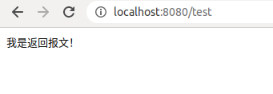
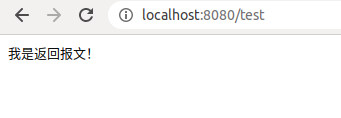

快速开始
-
打开首页
部署成功后访问http://localhost:8080
 如果打开如上图页面，则证明部署成功。
如果打开如上图页面，则证明部署成功。 -
添加http规则
添加一个hostame为*（可以匹配任何Host)， 一个接口/test 的mock规则。
添加成功后，如下图会提示添加成功，并查询到已添加的mock规则。
-
访问接口返回mock报文
访问mock规则的接口：http://localhost:8080/test

打开首页
部署成功后访问http://localhost:8080
如果打开如上图页面，则证明部署成功。
添加http规则
添加一个hostame为*（可以匹配任何Host)， 一个接口/test 的mock规则。
添加成功后，如下图会提示添加成功，并查询到已添加的mock规则。
访问接口返回mock报文
访问mock规则的接口：http://localhost:8080/test

From here you can search these documents. Enter your search terms below.
| Keys | Action |
|---|---|
| ? | Open this help |
| n | Next page |
| p | Previous page |
| s | Search |